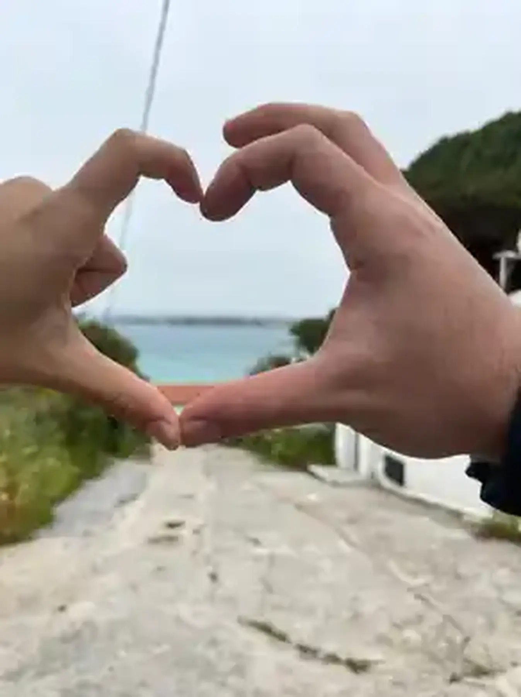
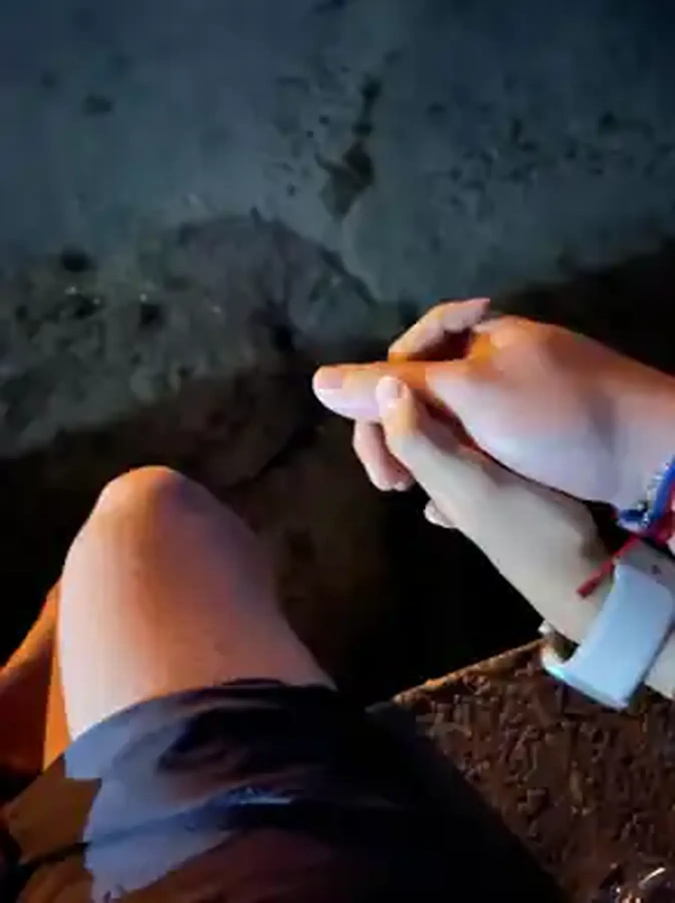

BÖLÜM I2019
İlk karşılaşma / Konya
Birimiz Ankara’da,
birimiz Konya’daydı.
Fatma Nur üniversite için Konya’daydı. Sadık Can Ankara’daydı. İlk kez Konya’da buluştuk. O gün, iki ayrı şehir aynı hikâyenin içine girdi.
Sadık Can × Fatma Nur
Bizimki, aynı yerde kalmayı değil; yıllar sonra bile birbirine geri dönen yolu hatırlamayı seçti.
30 Mayıs 2019
hâlâ yazılıyor.
ZAMAN
Hikâyemizin başladığı günden beri
Bu, kesintisiz geçen bir süre değil. Bir hikâyenin ilk cümlesinden bugüne kadar geçen zaman.
HİKÂYE
Ankara’dan Konya’ya, Denizli’den Çeşme’ye. Aradaki mesafeler değişti; hikâyenin yönü en sonunda aynı eve çıktı.
İlk karşılaşma / Konya
Fatma Nur üniversite için Konya’daydı. Sadık Can Ankara’daydı. İlk kez Konya’da buluştuk. O gün, iki ayrı şehir aynı hikâyenin içine girdi.
Bir süre sessizlik
Okul bitti, şehirler değişti ve 2022’nin sonunda yollarımız ayrıldı. Yaklaşık dört yıl boyunca hayat ikimizi de başka yerlere taşıdı. Hikâye o sırada anlatılmadı; ama tamamen de silinmedi.

Kaldığımız yerden değil
Yıllar sonra yeniden birbirimizi bulduk. Bu kez aynı insanlar değildik; ama birbirimize giden yolu hâlâ tanıyorduk.

Bugün
Fatma Nur’un yolu göreviyle Çeşme’ye çıktı. Yeniden barıştıktan sonra Sadık Can da Çeşme’ye yerleşti. Şimdi mesafe, bir şehir adı değil; mutfaktan salona kadar olan yol kadar.
BİZİM KÜÇÜK EVRENİMİZ
Sadık Can için kullanılan, başka kimsenin aynı anlamla söyleyemeyeceği isim.
Fatma Nur için. Hikâyenin denize en yakın tarafı.
Bizim sıradan ama vazgeçilmez şeylerimiz
03 küçük ritüelKorkmak için açıp, yarısında başka şeyler konuşmak.
İhtiyaç listesiyle başlayıp planlanmayan şeylerle dönmek.
Tariften daha çok birbirimize karıştığımız küçük ev ritüeli.

FON MÜZİĞİMİZ
Spotify / ortak playlist
Bu listeyi ikimiz ekliyoruz. O yüzden tek bir kişinin zevki değil; yıllar içinde oluşan ortak sesimiz.
Spotify'da aç ↗AÇ, EĞER...
Dört küçük not. Belki gerektiği gün söylenmesi zor olur diye şimdiden burada.
ANKARA → KONYA → DENİZLİ → ÇEŞME
30.05.2019 — devam ediyor…